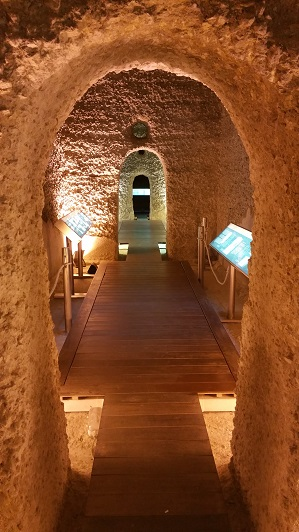
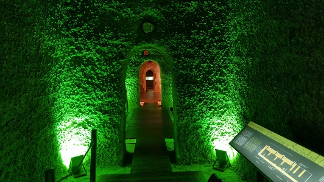
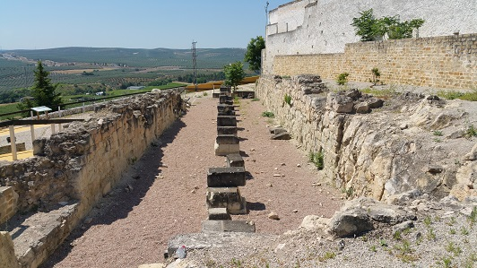

|
Monturque era una ciudad-fortaleza enclavada en un
cerro, cuyos orígenes se remontan a la época Calcolítica, según
atestiguan los restos hallados de edificaciones domésticas, cabañas de
planta circular, con zócalos de piedra, que se asentaron sobre la roca.
El conjunto de cisternas (decantadores) romanas más grande de
España y las únicas conservadas totalmente.
Esta cisterna (decantador) fue descubierta casualmente en
1885 con motivo de unas obras de ampliación del cementerio.
Con una capacidad de unos 850.000 litros.
De planta rectangular, conformada por tres galerías, orientadas en
sentido N-S. Cada una de estas galerías se divide en cuatro cámaras,
comunicados entre sí mediante pequeñas puertas, rematadas por arcos de
medio punto.
Esta Gran Cisterna está realizada en opus caementicium y revestida
interiormente con opus signinum.
Además de esta gran cisterna se conservan en Monturque al menos otras
nueve más, de pequeño tamaño y características similares entre sí,
pertenecientes también a época romana.
Ver:
Video
|
 |
 |
| |
|
También destacan los restos de un criptopórtico,
un edificio público del siglo II y del que se aprecian los enormes
sillares de piedra y algunas arcadas. La interpretación más
extendida es que pudo tratarse de un mercado romano, macellum, de
grandes dimensiones que constaba de dos plantas. Esta teoría parece
avalada por las agujas, vasijas, así como restos de trigo
encontrados por los arqueólogos. Algunos de los restos hallados se
encuentran en el Museo Histórico de Monturque.
De planta rectangular, de 37,5x6,25 m., dividida en dos naves por
una alineación de pilares centrales realizados a base de sillares.
Del siglo II son también restos de los baños
romanos, próximos al criptopórtico, las cisternas, situadas bajo el
cementerio de Monturque.
El yacimiento romano de "Los Paseillos", fue
descubierto a principios de los noventa. Se controlaba el cruce de
la importante vía Anticaria, con las calzadas procedentes de Iponuba,
Baena, Ucubi, Espejo y Ategua, Santa Cruz. Aún no ha sido posible
determinar cuál fue su verdadero nombre durante la época romana.
 |
A unos 50 m. al Norte del pueblo, a
orillas de su escarpe, localizamos el yacimiento denominado "la pedriza de
Las Pozas", aquí se descubrió en 1948 una serie de restos materiales de época romana
correspondientes a una necrópolis, que estaría ubicada extramuros del
antiguo Monturque. Entre los numerosos objetos encontrados en este
yacimiento destaca la representación de un caballo realizado en bronce. Otro
importante yacimiento de época romana localizado en el término de
Monturque es el descubierto en 1970 en el pago de "Los Torilejos", a unos
1.500 m. de la población, donde se descubrieron seis deteriorados mosaicos
con decoración geométrica y diversidad de colores que pavimentaban amplias
salas. También se encontraron
en este yacimiento basas y fragmentos de fustes de columnas de mármol,
abundante cerámica y monedas, sobretodo de los siglos III y IV. Todo
ello induce a pensar en la presencia de una villa romana de época bajoimperial.
|
También en el
término municipal de Monturque en el denominado "El Cislillo" y
cerca cortijo de "El Cerrajero" se encuentra una
construcción romana, el sepulcro romano de "El Cislillo" en la
parte más elevada de un paraje ocupado de olivar. Se trata
de un edificio en forma de prisma rectangular de unos 4,14x3,60m. y 3,27m. de alto de los cuales tan solo
sobresalen unos 40cm. sobre la superficie. En el se encontraron
algunos restos humanos y un busto realizado en mármol blanco. La
construcción es de opus caementicum. En la
actualidad la construcción ha sido totalmente saqueada. |
|